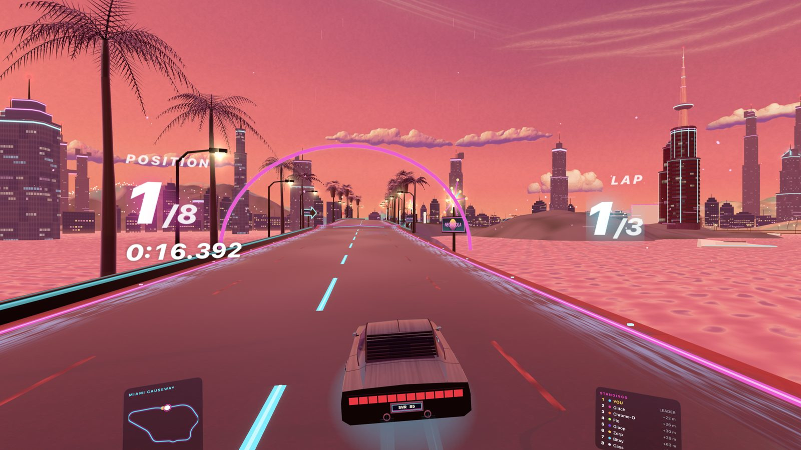
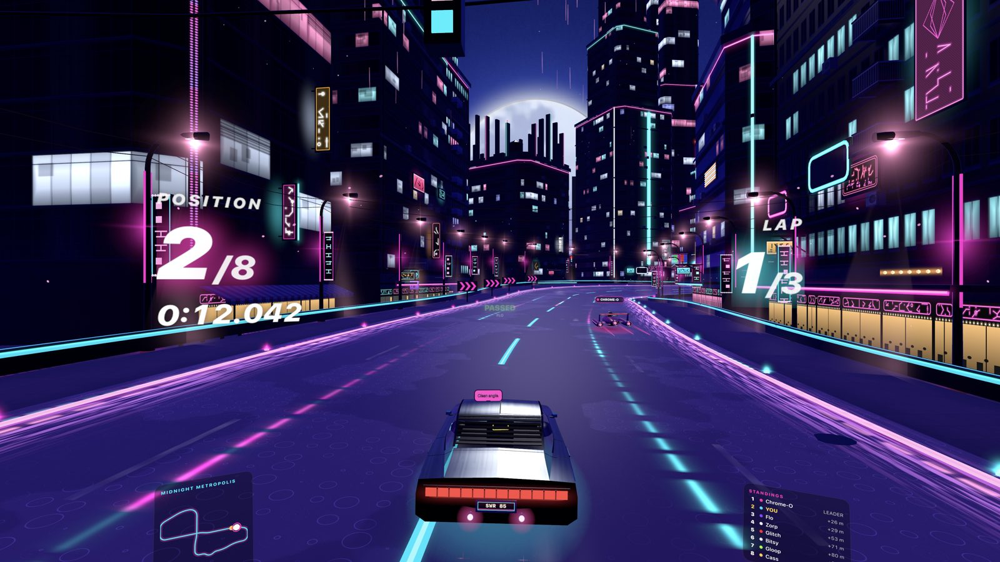
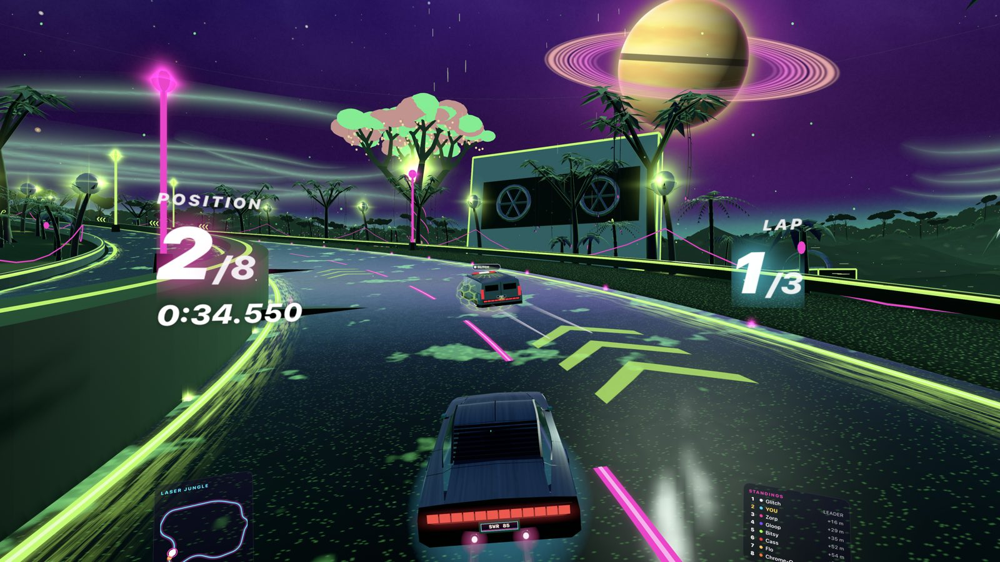
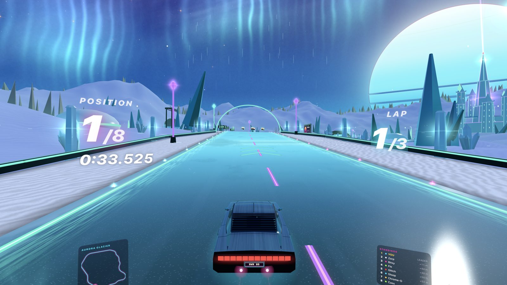
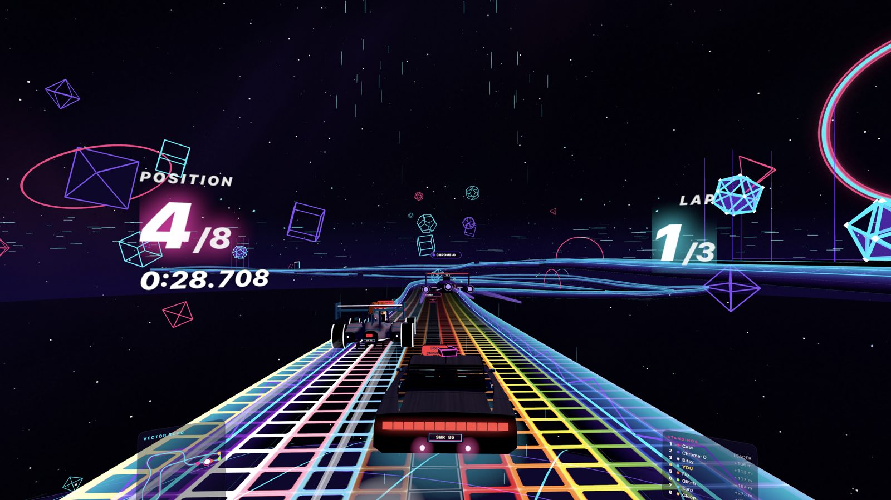
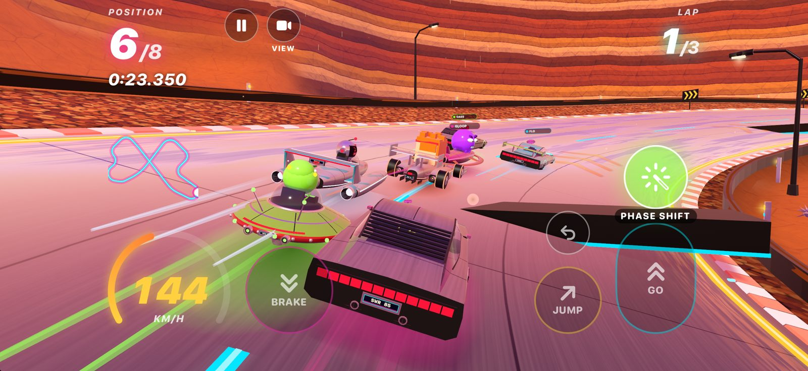
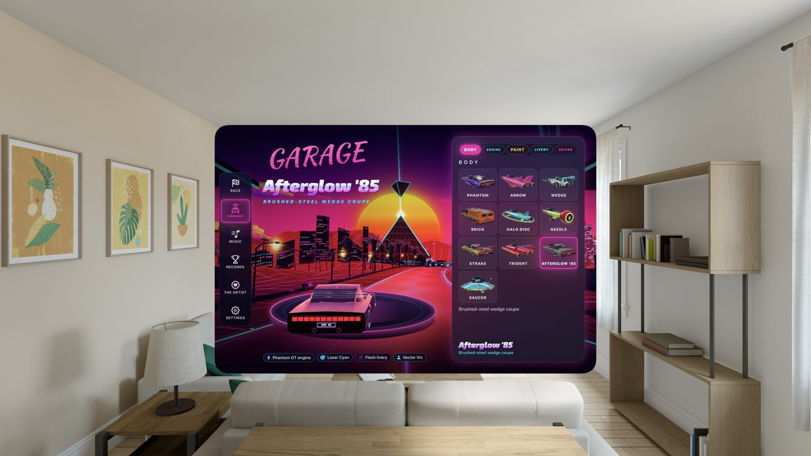

Six worlds, eighteen circuits
Race across six worlds
One circuit in each world changes as you race. Miami Causeway's tide floods the beach road, then the drawbridge lifts into a jump. A sandstorm swallows Chrome Canyon. Lava floods Magma Drive, then crusts over. Cyber Fjord's ice bridge cracks every lap until it gives way. On Electric Salt Flats, a storm hunts you down the pan.




The race
Jump, drift, fly off the edge
Hit a ramp and you're airborne; jump at the lip for a trick and a landing boost. Some ramps launch you over a gap, so commit. Drift through hairpins to charge a mini-turbo, chain boost pads, and nail the start for a rocket launch. Where the barriers end, the edge is real: fly off and you'll drop, respawn and lose time.
Steer with your hands, or tilt your iPhone
On Apple Vision Pro, hold your hands up like you're gripping a wheel, and turn. Pinch to brake and fire. On iPhone, tilt it like a wheel or slide your thumb. A game controller works on both.
A grid full of characters
Zorp, a one-eyed green alien in a flying saucer; Gloop, a wobbly ball of neon goo; Vector Vic, a glowing wireframe man; Glitch, a TV host whose face keeps cutting out; Cass, a walking cassette; Chrome-O, a petty chrome robot; Bitsy, an 8-bit hero; and Flo, an aerobics flamingo in leg-warmers. Every one of them talks in synthesizer.
Ten craft, four engines, rivals with attitude
Ten hover-craft bodies, from a needle-nosed dart to the Afterglow '85 gull-wing wedge, with paints and liveries for each. Seven rivals race their own way: blockers, gamblers and clean racers. Fly through a spinning mixtape for Echo Boost, Prism Shield, Ion Pulse, Bass Mine or Phase Shift.


Race your way
Grand Prix at Rookie, Pro and Elite. Time trials against your own ghost. Online races, and a Game Center leaderboard for every circuit.
The soundtrack
46 original songs
Madison Charlton wrote, produced and released all 46 songs in Synthwave Racer, then designed the game around them. Their music is released as Matti Charlton. A trackside billboard shows each song's title and cover, and Listen on Apple Music opens the song that's playing. You can import your own music too.
Free to start. One purchase for everything.
Miami Causeway, Sunset Grid and Chrome Canyon are free. Synthwave Racer Pro is one purchase that unlocks the other fifteen circuits and online races for up to eight players. No subscription. No ads.